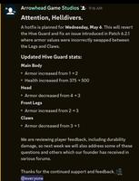

French prosecutors say police detained a 15-year-old suspected of using the alias "breach3d" in connection with a cyberattack on France Titres (ANTS), the state agency that handles passports, ID cards, and other secure documents. The breach allegedly involved 12 million to 18 million lines of data offered for sale online, potentially affecting up to a third of France's population if the records are unique. The Register reports: It formally opened (PDF) a judicial investigation on April 29, covering alleged fraudulent access to a state-run automated data processing system and the extraction of data from it. Each offense carries a potential prison sentence of seven years and a maximum ~$350,000 fine. Public Prosecutor Laure Beccuau has requested that the minor, whose pronouns, like their name, were also not specified, be formally charged and placed under judicial supervision.
[...] France's approach to punishing minors via its legal system is typically geared toward re-education and rehabilitation rather than prison time. While those aged between 13 and 16 can face time in juvenile detention, it is often used as a last resort measure. The maximum sentences and fines for the charges the 15-year-old in this case faces are upper limits imposed on adult offenders, and would likely be lowered substantially in cases involving a minor, like this one.
Read more of this story at Slashdot.
RightsCon, one of the world's largest digital human rights conferences, was suddenly postponed by Zambia's government just days before it was scheduled to begin in Lusaka. Officials cited unresolved speaker clearances and "thematic issues," while Access Now said it had not yet received formal communication and was seeking an urgent meeting with the government. 404 Media reports: Minister of Technology and Science Felix Mutati first announced the postponement on April 28, saying that Zambia needed more time to ensure the conference "fully [aligns] with national procedures, diplomatic protocols, and the broader objective of fostering a balanced and consensus-driven platform for dialogue." "In particular, certain invited speakers and participants remain subject to pending administrative and security clearances, which have not yet been concluded," he added, according to the Lusaka Times.
[...] On a popular listserv for academics, many of whom are attending RightsCon, a board member of Access Now wrote "I am told I can leak that RightsCon has been canceled. Message from [Access Now] following shortly" in a thread about what attendees were planning on doing. And in an email, AccessNow wrote: "It is with heavy hearts that we share: RightsCon will not proceed in Zambia or online. We understand this news is deeply upsetting for our community and while we know everyone has questions, our goal right now is to notify you of the event's status because many of you have imminent travel plans. We do not recommend registered participants travel to Lusaka for RightsCon.
Over the last 48 hours we have experienced an overwhelming surge of support from civil society, government representatives, sponsors, and our community as a whole. For this, we wholeheartedly thank you. We'll communicate more information soon."
Read more of this story at Slashdot.
A new poll shows a slim majority of Swiss voters now support a June 14 referendum to cap the country's population at 10 million by 2050. Under the proposal backed by the right-wing Swiss People's Party (SVP), "the permanent resident population must not exceed 10 million before 2050, and Switzerland should abandon its freedom of movement agreement with the EU," reports Reuters. From the report: Switzerland's population is now more than 9 million, with official data showing foreign nationals accounted for more than 27% by 2024. The survey, conducted on April 22 and 23 and published in newspaper Tages-Anzeiger, showed 52% of 16,176 respondents in favor of the proposal or leaning that way, while 46% took the opposite view. The rest gave no opinion. A previous poll from early March had shown 45% backing the initiative and 47% against it, the newspaper said, flagging the latest result as unusual in that Swiss referendum proposals generally lose support as the voting day comes closer. The poll had a margin of error of plus or minus 3 percentage points.
Read more of this story at Slashdot.
An anonymous reader quotes a report from the San Francisco Chronicle: Elon Musk returned to the witness stand Wednesday in Oakland federal court for a second day of testimony in his case against OpenAI, detailing his shift from being an enthusiastic supporter of the nonprofit to feeling betrayed. He also clashed repeatedly with OpenAI's attorney over questions that Musk believed were unfair. He said his feelings towards OpenAI CEO Sam Altman and President Greg Brockman shifted from a "phase one" of support, "phase two" of doubts, and finally "phase three, where I'm sure they're looting the nonprofit. We're currently in phase three," Musk said with a chuckle. Musk said he was a "fool" for giving OpenAI "$38 million of essentially free funding to create what would become an $800 billion company," of which he has no equity stake.
In his 2024 lawsuit, Musk alleged breach of charitable trust and unjust enrichment, arguing OpenAI abandoned its original nonprofit mission to benefit humanity to pursue financial gain. OpenAI's lawyer William Savitt argued Tuesday during his opening statement that the nonprofit entity remains in control of the for-profit public benefit corporation and is now one of the most well-funded nonprofits in the world. Musk is seeking to oust Altman from OpenAI's board and upwards of $134 billion in damages, which he said would be used to fund OpenAI's nonprofit mission. During cross-examination, Savitt clashed with Musk over questioning. Savitt asked whether Musk had contributed $38 million to OpenAI, rather than the $100 million that he later claimed to have invested on X. Musk said he also contributed his reputation to the company and came up with the idea for the name, leading Savitt to ask Musk to respond yes or no to "simple" questions.
"Your questions are not simple. They're designed to trick me, essentially," Musk said, adding that he had to elaborate or it would mislead the jury. He compared Savitt's questions to asking, "have you stopped beating your wife?" Judge Yvonne Gonzalez Rogers intervened, leading Musk to answer yes to the $38 million investment amount. The world's richest man said his doubts grew and by late 2022, he thought "wait a second, these guys are betraying their promise. They're breaking the deal." "I started to lose confidence that they were telling me the truth," Musk said. A turning point was co-defendent Microsoft's investment of billions of dollars into OpenAI, Musk said. On October 23, 2022, Musk texted Altman that he was "disturbed" to see OpenAI's valuation of $20 billion in the wake of the Microsoft deal. Musk called the deal a "bait and switch," since a nonprofit doesn't have a valuation. OpenAI had "for all intents and purposes" become primarily a for-profit company, Musk argued. Altman responded to Musk by text that "I agree this feels bad," saying that OpenAI had previously offered equity in the company but Musk hadn't wanted it at the time. Altman said the company was happy to offer equity in the future. Musk said it "didn't seem to make sense to me" to hold equity in what should be a nonprofit. Musk also testified about former OpenAI board member Shivon Zilis, who lives with him, is the mother of four of his children, and served as a senior advisor at Neuralink. He denied that she shared sensitive OpenAI information with him. Court evidence showed Musk had encouraged her to stay close to OpenAI to "keep info flowing" and had approved Neuralink recruiting OpenAI employees, which he defended by saying workers are free to change jobs. "It's a free country," Musk said.
Recap:
Musk Testifies OpenAI Was Created As Nonprofit To Counter Google (Day Two)
Elon Musk and OpenAI CEO Sam Altman Head To Court (Day One)
Read more of this story at Slashdot.
A federal judge denied Sam Bankman-Fried's request for a new trial, calling his claims of DOJ witness intimidation "wildly conspiratorial" and unsupported by the record. Judge Lewis Kaplan said (PDF) the FTX founder's motion appeared tied to a pre-indictment plan to recast himself as a Republican victim of Biden's DOJ in hopes of gaining sympathy, leniency, or even a Trump pardon. Ars Technica reports: Bankman-Fried was sentenced to 25 years in prison in 2024 for "masterminding one of the largest financial frauds in American history," US District Judge Lewis Kaplan wrote in his order. He was convicted on all charges, including wire fraud, conspiracy to commit securities fraud, commodities fraud, and money laundering. There is already an appeal pending in another court, the judge noted. But Bankman-Fried filed a separate motion for a new trial, claiming that there were "newly discovered" witnesses and evidence that might have helped his defense, if Joe Biden's Department of Justice hadn't intimidated them into refusing to testify or, in one case, lying on the stand.
He also asked for a new judge, wanting Kaplan to recuse himself. However, Kaplan pointed out that "none of the witnesses" were "newly discovered." And more concerningly, Bankman-Fried offered no evidence that the witnesses could prove the "wildly conspiratorial" theory the FTX founder raised, claiming that their absence at the trial was a "product of government threats and retaliation," the judge wrote. Bankman-Fried's theory is "entirely contradicted by the record," Kaplan said. He emphasized that granting Bankman-Fried's request "would be a large waste of judicial resources as it could require another judge to familiarize himself or herself with an extensive and complicated record."
Additionally, all three witnesses that Bankman-Fried claimed could give crucial testimony in his defense were known to him throughout the trial, and he never sought to compel their testimony. And the "self-serving social-media posts" of one witness who now claims that he lied when testifying against Bankman-Fried -- "Ryan Salame, who pleaded guilty" -- must be met with "utmost suspicion," Kaplan said. "If one were to take Salame at his current word, he lied under oath when pleading guilty before this Court," Kaplan wrote. Even if taken seriously, "his out-of-court, unsworn statements could not come anywhere close to clearing the bar to warrant a new trial," Kaplan said, deeming Salame's credibility "highly questionable." Further, "even if these individuals had testified for Bankman-Fried, his protestations that one or more of them would have supported his claims that FTX was not insolvent and that his victims all were compensated fully in the bankruptcy proceedings are inaccurate or misleading," Kaplan concluded.
In the order, Kaplan's frustration seems palpable, as there may have been no need for him to rule on the motion at all after Bankman-Fried requested to withdraw it. But the judge said the ruling was needed after Bankman-Fried waited to file his withdrawal request until after the DOJ and the court wasted time responding and reviewing filings, the judge said. Troublingly, Bankman-Fried's request to withdraw his request without prejudice would have allowed him to potentially request a new trial after the appeal ended. Based on the substance of the filing, that risked wasting future court resources, Kaplan determined. To prevent overburdening the justice system, Kaplan deemed it necessary to deny Bankman-Fried's motion and request for recusal, rather than allow him to withdraw the filing without prejudice.
Read more of this story at Slashdot.
Canonical's plan to add AI features to Ubuntu has sparked pushback from users who are concerned it could follow Windows 11's AI-heavy direction. "After Canonical's announcement earlier this week that it's bringing AI features to Ubuntu, replies included requests for an AI 'kill switch' or a way to disable the upcoming features," reports The Verge. Canonical says it has no plans for a "global AI kill switch" but it will allow users to remove any AI features they don't want. From the report: In his original post, [Canonical's VP of engineering, Jon Seager] said the upcoming AI features will include accessibility tools like AI speech-to-text and text-to-speech, along with agentic AI features for tasks like troubleshooting and automation. Canonical is also encouraging its engineers to use AI more and plans to begin introducing AI features in Ubuntu "throughout the next year."
In a follow-up comment, Seager clarified that, "my plan is to introduce AI-backed features as a 'preview' on a strictly opt-in basis in [Ubuntu version] 26.10. In subsequent releases, my plan is to have a step in the initial setup wizard that allows the user to choose whether or not they'd like the AI-native features enabled." Ultimately, he said, "All of these capabilities will be delivered as Snaps to the OS, layered on top of the existing Ubuntu stack. That means there will always be the option of removing those Snaps." Users who prefer to avoid AI entirely could switch to other distros like Linux Mint, Pop!_OS, or Zorin OS. "These distros have some similarities to Ubuntu, but may not necessarily adopt the new AI features Canonical is rolling out," adds The Verge.
Read more of this story at Slashdot.
Joby Aviation has completed demonstration flights of its electric air taxi over New York City, testing real routes between JFK and Manhattan helipads as it prepares for a future commercial service. The company says its eVTOL could turn a 60- to 120-minute airport trip into a flight of under 10 minutes, though commercial launch still depends on FAA certification. Electrive reports: To launch operations in New York City, Joby acquired Blade Urban Air Mobility last year. Blade already enables helicopter flights for affluent travelers between Manhattan and airports such as JFK or Newark in just five minutes, avoiding up to two hours of traffic and typical airport hassles. Joby aims to replace this service with quiet, electric air taxis as soon as possible, transitioning Blade's existing customers to the new technology.
However, introducing a new aircraft into commercial service requires a years-long certification process, overseen in the US by the Federal Aviation Administration (FAA). Joby is now in the final phase of FAA certification. Following a series of demonstration flights in the San Francisco Bay Area, the company has tested its air taxi in New York City on real flight routes and under real-world conditions. During these tests, Joby demonstrated the acoustics and performance metrics critical for entering the urban air taxi market.
During these demonstration flights, Joby's air taxi took off from John F. Kennedy International Airport (JFK) and landed at various helipads across the city, including Downtown Skyport and the helipads at West 30th Street and East 34th Street in Midtown, where Blade Air Mobility's premium passenger lounges are located. These locations represent some of the commercial routes Joby plans for New York [...]. Fun fact: Joby's eVTOL aircraft are over 100 to 1,000 times quieter than a conventional helicopter, operating at roughly 55-65 dB during takeoff and landing compared to 90+ dB for helicopters.
Read more of this story at Slashdot.
MacRumors reports that Apple has effectively paused work on Vision Pro after the M5 refresh failed to revive demand. The team has reportedly been reassigned and the company is now shifting focus toward smart glasses instead. From the report: The Vision Pro has been criticized for its high price tag and its uncomfortable weight. The device is over 1.3 pounds, and even with the more comfortable Dual Knit Band that Apple added to redistribute weight, it continues to be hard to wear for long periods of time. The M5 chip added a 120Hz refresh rate, 10 percent more rendered pixels, and around 30 additional minutes of battery life, but the price tag stayed at $3,499, and it ended up not selling well. The Vision Pro has been unpopular since it first launched, and Apple only sold around 600,000 units in total. Insider sources told MacRumors that Apple has received an unusually high percentage of returns, far exceeding any other modern Apple product.
[...] If Apple finds a way to create a much cheaper, more comfortable VR headset in the future, the Vision Pro line could be revived, but right now, the company has no plans to launch a new model. Apple has not discontinued the Vision Pro and is continuing to sell the M5 model. Instead of continuing to experiment with virtual reality, Apple is working on smart glasses that will eventually incorporate augmented reality capabilities, but the first version will be similar to the Ray-Ban Meta smart glasses with AI and no integrated display.
Read more of this story at Slashdot.
A newly disclosed Linux kernel flaw dubbed "Copy Fail" can let a local, unprivileged attacker gain root access on major Linux distributions, with researchers claiming the bug affects kernels shipped since 2017. "The POC exploit works out of the box today, but a future version that can escape from containers like Docker is promised soon," writes Slashdot reader tylerni7. "Technical details are available here." Slashdot reader BrianFagioli shares a report from NERDS.xyz: A newly disclosed Linux kernel vulnerability called Copy Fail (CVE-2026-31431) allows an unprivileged user to gain root access using a tiny 732-byte script, and it works with unsettling consistency across major distributions. Unlike older exploits that relied on race conditions or fragile timing, this one is a straight-line logic flaw in the kernel's crypto subsystem. It abuses AF_ALG sockets and splice to overwrite a few bytes in the page cache of a target file, such as /usr/bin/su. Because the kernel executes from the page cache, not directly from disk, the attacker can inject code into a setuid binary in memory and immediately escalate privileges.
What makes this especially concerning is how quiet it is. The file on disk remains unchanged, so standard integrity checks see nothing wrong, while the in-memory version has already been tampered with. The same primitive can also cross container boundaries since the page cache is shared, raising the stakes for multi-tenant environments and Kubernetes nodes. The underlying issue traces back to an in-place optimization added years ago, now being rolled back as part of the fix. Until patched kernels are widely deployed, this is one of those bugs that feels less like a theoretical risk and more like a practical, reliable path to full system compromise.
Read more of this story at Slashdot.
A new study from Harvard Medical School and Beth Israel Deaconess found that an OpenAI reasoning model outperformed experienced ER doctors at diagnosing and managing patient cases using messy, real-world emergency department records. Researchers say the results don't support replacing doctors, but they do suggest AI could meaningfully reshape clinical workflows if tested carefully in prospective trials. NPR reports: The researchers ran a series of experiments on the AI model to test its clinical acumen -- including actual cases like the lupus patient who'd been previously treated at the emergency department at Beth Israel in Boston. The team graded how well the AI model could provide an accurate diagnosis at three moments in time, from the triage stage in the ER, up to being admitted into the hospital. Overall, AI outperformed two experienced physicians -- and did so with only the electronic health records and the limited information that had been available to the physicians at the time. "This is the big conclusion for me -- it works with the messy real-world data of the emergency department, " said Dr. Adam Rodman, a clinical researcher at Beth Israel and one of the study authors. "It works for making diagnoses in the real world."
Other parts of the study focused on case reports published in the New England Journal of Medicine and clinical vignettes to suss out whether the AI model could meet well-established "benchmarks" and game out thorny diagnostic questions. "The model outperformed our very large physician baseline," said Raj Manrai, assistant professor of Biomedical Informatics at Harvard Medical School who was also part of the study. The authors emphasize the AI relied on text alone, while in real life, clinicians need to attend to many other inputs like images, sounds and nonverbal cues when diagnosing and treating a patient. The findings have been published Thursday in the journal Science.
Read more of this story at Slashdot.
An anonymous reader quotes a report from Ars Technica: Several times in the last couple of decades, Microsoft has released source code for the original MS-DOS operating system that kicked off its decades-long dominance of consumer PCs. This week, the company has reached further back than ever, releasing "the earliest DOS source code discovered to date" along with other documentation and notes from its developer.
Today's source release is so old that it predates the MS-DOS branding, and it includes "sources to the 86-DOS 1.00 kernel, several development snapshots of the PC-DOS 1.00 kernel, and some well-known utilities such as CHKDSK," write Microsoft's Stacey Haffner and Scott Hanselman in their co-authored post about the release. [...] This source code is old enough that it hadn't been stored digitally. "A dedicated team of historians and preservationists led by Yufeng Gao and Rich Cini," calling itself the "DOS Disassembly Group," painstakingly transcribed and scanned in code from paper printouts provided by Paterson. This process was made even more difficult because modern OCR software struggled with the quality of the decades-old printout.
Read more of this story at Slashdot.
An anonymous reader quotes a report from Ars Technica: The system prompt for OpenAI's Codex CLI contains a perplexing and repeated warning for the most recent GPT model to "never talk about goblins, gremlins, raccoons, trolls, ogres, pigeons, or other animals or creatures unless it is absolutely and unambiguously relevant to the user's query."
The explicit operational warning was made public last week as part of the latest open source code for Codex CLI that OpenAI posted on GitHub. The prohibition is repeated twice in a 3,500-plus word set of "base instructions" for the recently released GPT-5.5, alongside more anodyne reminders not to "use emojis or em dashes unless explicitly instructed" and to "never use destructive commands like 'git reset --hard' or 'git checkout --' unless the user has clearly asked for that operation."
Separate system prompt instructions for earlier models contained in the same JSON file do not contain the specific prohibition against mentioning goblins and other creatures, suggesting OpenAI is fighting a new problem that has popped up in its latest model release. Anecdotal evidence on social media shows some users complaining about GPT's penchant for focusing on goblins in completely unrelated conversations in recent days. Update: OpenAI has published a blog post explaining "where the goblins came from."
In short, a training signal meant to encourage its "Nerdy" personality accidentally rewarded creature-heavy metaphors, causing words like "goblins" and "gremlins" to spread beyond that personality into broader model behavior. OpenAI says it has since retired the Nerdy personality, removed the goblin-friendly reward signal, and filtered creature-word examples from training data to keep the quirk from resurfacing in inappropriate contexts.
Read more of this story at Slashdot.
Longtime Slashdot reader schwit1 shares a report from ZeroHedge: The Justice Department on Tuesday sued Cloudera, accusing the enterprise data and artificial intelligence company of deliberately engineering a hiring process that excluded American workers from at least seven lucrative technology positions while the firm pursued permanent residency sponsorship for foreign workers on temporary visas. In a 14-page complaint filed with the Office of the Chief Administrative Hearing Officer, the department's Civil Rights Division alleges that Cloudera, from March 31, 2024, through at least January 28, 2025, instructed job candidates to submit applications to a dedicated email address, amerijobpostings@cloudera.com, that rejected all external messages with an automated bounce-back error. The company did not advertise the roles on its public careers website or accept applications through its standard portal, as it did for non-sponsorship positions.
Cloudera then attested to the Department of Labor that it could not locate any qualified U.S. workers for the roles, which paid between approximately $180,000 and $294,000 annually, according to the filing. The positions included a Product Manager role in Santa Clara, California, with a listed salary range of $170,186 to $190,000. The case marks one of the most detailed enforcement actions under the Justice Department's Protecting U.S. Workers Initiative, which was relaunched last year and has already produced 10 settlements targeting employers accused of discriminating against American workers in favor of temporary visa holders. "Employers cannot use the PERM sponsorship process as a backdoor for discriminating against U.S. workers," Assistant Attorney General Harmeet K. Dhillon of the Civil Rights Division said in a statement. "The Division will not hesitate to sue companies who intentionally deter U.S. workers from applying to American jobs."
Read more of this story at Slashdot.
Tesla has produced the first Semi from its new high-volume production line at Gigafactory Nevada, a milestone for the long-delayed electric Class 8 truck program after years of pilot builds and delays. Electrek reports: The Tesla Semi has had one of the longest gestation periods in Tesla's history. First unveiled in 2017, the truck was originally promised for production in 2019. That target slipped repeatedly -- to 2020, then 2021, then 2022 -- before Tesla finally delivered a handful of units to PepsiCo in late 2022. Those early trucks were essentially hand-built on a pilot line. Tesla spent the next three years refining the design, cutting roughly 1,000 lbs from the truck, and building out a dedicated factory adjacent to Gigafactory Nevada in Sparks. The company revealed the final production specs in February, confirming two trims: a Standard Range with 325 miles at full 82,000-lb gross combination weight, and a Long Range with 500 miles of range.
Tesla is quoting $290,000 for the 500-mile Long Range version and roughly $260,000 for the Standard Range -- making it the lowest-priced Class 8 battery electric tractor on the market. The shift from a pilot line to a high-volume production line is significant. Tesla's Semi factory is designed for an annual capacity of 50,000 trucks, though the company will ramp gradually. Analysts project deliveries between 5,000 and 15,000 units in 2026, but that sounds way too optimistic. [...] Both trims feature an 800-kW tri-motor drivetrain producing 1,072 hp and support 1.2-MW Megacharger speeds, restoring 60% of range in roughly 30 minutes -- conveniently timed around a driver's mandatory rest break. Tesla has opened its first Megacharger station in Ontario, California, and has mapped 66 Megacharger locations across 15 states.
Read more of this story at Slashdot.
Reuters reports that Charles Lieber, the former Harvard scientist convicted of lying to U.S. authorities about payments and ties to China, is now leading China's state-funded i-BRAIN lab in Shenzhen, where he has access to advanced nanofabrication tools and primate research facilities for brain-computer interface work. From the report: Charles Lieber, 67, is among the world's leading researchers in brain-computer interfaces. The technology has shown promise in treating conditions such as ALS and restoring movement in paralyzed patients. But it also has potential military applications: Scientists at China's People's Liberation Army have investigated brain interfaces as a way to engineer super soldiers by boosting mental agility and situational awareness, according to the U.S. Defense Department. Lieber was found guilty by a jury and convicted in December 2021 of making false statements to federal investigators about his ties to a Chinese state program to recruit overseas talent, and tax offenses related to payments he received from a Chinese university. He served two days in prison and six months under house arrest, and was fined $50,000 and ordered to pay $33,600 in restitution to the Internal Revenue Service. During the case, his defense said he was suffering from an incurable lymphoma, which was in remission, and he was fighting for his life.
Three years after he was sentenced, Reuters has learned that Lieber is now overseeing China's state-funded i-BRAIN, or the Institute for Brain Research, Advanced Interfaces and Neurotechnologies, with access to dedicated nanofabrication equipment and primate research infrastructure unavailable to him at Harvard. The lab is an arm of the Shenzhen Medical Academy of Research and Translation, or SMART. "I arrived on April 28, 2025 with a dream and not much more, maybe a couple bags of clothes," Lieber said of his move to China at a Shenzhen government conference in December. "Personally, my own goals are to make Shenzhen a world leader."
SMART last year appointed Lieber as an investigator, according to a post on i-BRAIN's website dated May 1, 2025. That news was covered by some media outlets. The same day, i-BRAIN said Lieber had also been appointed its founding director -- an announcement that went unreported at the time. This story is the most comprehensive account of Lieber's activities since he moved to China. Reuters is reporting for the first time that his lab has access to dedicated primate research facilities and chip-making equipment; that it sits within a sprawling ecosystem of state-backed institutions bankrolled by billions of dollars in government funding; and that it is housed within an institution that is luring top scientific talent back from the United States.
Read more of this story at Slashdot.
Anhata Rooprai / Reuters : Western Digital reports Q3 revenue up 45% YoY to $3.34B, vs. $3.25B est., and forecasts Q4 revenue above estimates; WDC drops 7%+ after hours — Western Digital (WDC.O) forecast quarterly revenue above Wall Street estimates on Thursday, expecting strong demand for data storage …
Britney Nguyen / MarketWatch : Sandisk reports Q3 revenue up 251% YoY to $5.95B, vs. $4.72B est., consumer revenue below est., and forecasts Q4 revenue above est.; SNDK drops 5%+ after hours — The company says it's transitioning to a business model of ‘multiyear customer engagements’ — Referenced Symbols
Dan Mangan / CNBC : The US Senate unanimously passed a rule barring senators from trading on prediction markets like Kalshi and Polymarket, amid rising concern over insider trading — The U.S. Senate on Thursday unanimously passed a rule barring senators from trading on prediction markets effective immediately.
Annie Palmer / CNBC : Alphabet's stock climbed 10% on Thursday and 34% in April, its best month since 2004; Meta's stock plunged 8.5% on Thursday, its steepest drop since October — Alphabet's stock surged on Thursday, lifting Google to its best month on Wall Street since 2004, after the company reported better …
Business Insider : Sources: Meta HR chief Janelle Gale told employees she can't rule out further layoffs; Zuckerberg said AI automation is not the driving factor behind them — - Meta previously announced it will cut 10% of its staff next month. — Meta's HR chief told staff in a meeting that she can't promise further layoffs won't happen.
Reinhardt Krause / Investor's Business Daily : Twilio reports Q1 revenue up 20% YoY to $1.41B, vs. $1.34B est., and forecasts Q2 revenue above estimates; TWLO jumps 17%+ after hours — Twilio (TWLO) stock popped after the communications software maker reported first-quarter earnings and revenue that topped consensus estimates.
Anhata Rooprai / Reuters : Atlassian reports Q3 revenue up 32% YoY to $1.79B, vs. $1.69B est., and raises its annual revenue forecast; TEAM jumps 17%+ after hours — Atlassian (TEAM.O) raised its annual revenue forecast on Thursday, betting that its investments in artificial-intelligence features and a push …
Reuters : Tim Cook says iPhone sales, which slightly missed Q2 estimates, were held back by chip supply constraints, as “demand was off the charts” — Apple (AAPL.O) on Thursday reported results that beat Wall Street estimates, with customers showing eagerness to buy a new MacBook model driven …
Todd Spangler / Variety : Apple reports Q2 revenue from Services, which includes the App Store, Apple TV, Apple Music, and more, grew 16.3% YoY to $30.98B, beating estimates of $30.4B — Apple hit another high note in the first three months of 2026, delivering an earnings beat driven by a surge in iPhone sales and continued momentum in its Services segment.
Jennifer Elias / CNBC : Apple Q2: iPhone up 22% YoY to $56.99B, vs. $57.21B est., Mac up 6% to $8.4B, iPad up 8% to $6.91B, and Wearables, Home, and Accessories up 5% to $7.9B — Apple issued a better-than-expected revenue forecast for the current period after beating on sales and earnings in the fiscal second quarter.
Apple : Apple reports Q2 revenue up 17% YoY to $111.18B, vs. $109.66B est., net income up 19% to $29.6B, and authorizes an additional $100B share buyback program — March quarter records for total company revenue, iPhone revenue, and EPS — Services revenue reaches new all-time high
Cecilia D'Anastasio / Bloomberg : Roblox reports Q1 bookings up 43% YoY to $1.7B, vs. $1.73B est., and DAUs up 35% to 132M, below analysts' estimates of 143.8M; RBLX drops 16%+ after hours — Roblox Corp. reported first-quarter users that fell short of analysts' expectations after implementing safety features restricting how kids …
Todd Spangler / Variety : Roku reports Q1 revenue up 22% YoY to $1.25B, ad revenue up 27% to $613M, subscription revenue up 30%, raises 2026 profit guidance; ROKU jumps 8%+ after hours — Roku beat Wall Street earnings forecasts for the first quarter of 2026 and raised its full-year profit guidance as the company continues …
Jonathan Vanian / CNBC : Reddit reports Q1 revenue up 69% YoY to $663M vs. $611M est., DAUq up 17% to 126.8M, above est., forecasts Q2 revenue above est.; RDDT jumps 13%+ after hours — Reddit reported better-than-expected profit and revenue in its first-quarter earnings report on Thursday, and also issued an optimistic forecast.
TRM Insights : North Korea-linked hackers stole ~$577M across the Drift Protocol and KelpDAO hacks in April, accounting for 76% of total crypto hack losses so far in 2026 — Key takeaways — North Korean hackers, from two distinct groups, stole approximately USD 577 million in 2026 YTD …